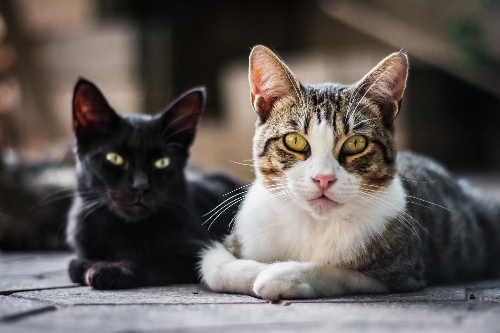

Dicas sobre gatos
Aqui você encontrará informações sobre personalidades de gatos e cuidados necessários.
Personalidades de gatos
Os gatos têm personalidades variadas, e cada um pode exibir diferentes traços. Aqui estão alguns tipos comuns de personalidade em gatos:
- Independentes: Gatos com essa personalidade preferem explorar sozinhos e não precisam de atenção constante. Gostam de passar tempo por conta própria.
- Apegados: Alguns gatos são extremamente carinhosos e seguem os donos pela casa, buscando contato físico e afeto constante.
- Brincalhão: Gatos com essa personalidade adoram interagir com brinquedos e jogos, mantendo-se ativos e curiosos em relação ao ambiente.
- Cauteloso: São mais reservados e tímidos, preferindo evitar situações novas ou desconhecidas até se sentirem confortáveis.
- Territorial: Esses gatos são protetores de seu espaço e podem ser desconfiados com novos animais ou pessoas, demonstrando comportamentos defensivos.
A personalidade de cada gato pode ser influenciada por sua criação, ambiente e experiências, fazendo com que cada um seja único em seu comportamento e preferências.
Cuidados Necessários
Para manter seu gato saudável e feliz, é importante:
- Alimentação balanceada: Oferecer ração de boa qualidade específica para gatos, adaptada à idade e necessidades do animal. Gatos também precisam de água fresca sempre disponível.
- Higiene e caixa de areia: Manter a caixa de areia sempre limpa e em local tranquilo. Os gatos são animais muito higiênicos e podem rejeitar uma caixa suja.
- Vacinação e vermifugação: Seguir um calendário de vacinas, além de vermifugar o gato regularmente para prevenir doenças.
- Exercícios e estímulos: Proporcionar brinquedos, arranhadores e áreas de lazer para estimular a atividade física e mental. Gatos precisam se entreter para evitar tédio e estresse.
- Cuidados com a pelagem: Escovar o pelo regularmente, especialmente em gatos de pelos longos, para evitar a formação de nós e reduzir a ingestão de pelos.
- Saúde veterinária: Fazer check-ups regulares com o veterinário para monitorar a saúde, identificar problemas precocemente e cuidar da saúde bucal do gato.
- Ambiente seguro: Manter o gato em um ambiente seguro, longe de perigos como produtos tóxicos, fios elétricos e trânsito, especialmente se for um gato que tem acesso ao exterior.
- Carinho e atenção: Gatos podem ser independentes, mas também precisam de atenção e carinho. Interações diárias ajudam no vínculo afetivo e no bem-estar do animal.